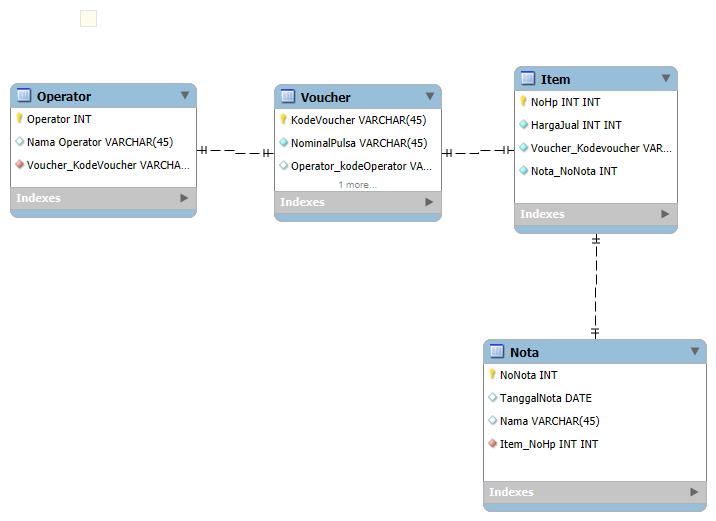

Basis Data
Ditulis oleh Muhammad Naufal Azura pada 28 September 2024
Sebelumnya sudah ada yang tau belum apa itu basis data, Basis data adalah kumpulan data yang terorganisir untuk memudahkan akses, pengelolaan, dan pembaruan. Data disimpan dalam tabel berisi baris dan kolom. di mana setiap baris merepresentasikan satu entitas atau record, dan kolom merepresentasikan atribut atau informasi spesifik dari entitas tersebut. Dengan adanya basis data, pengguna dapat menyimpan informasi dalam jumlah besar secara efisien dan mengaksesnya dengan cepat.
1. Apa yang Anda Harapkan dari MK Basis Data
Yang saya harapkan dari MK basis data ini adalah saya ingin mahir dan paham betul dengan memanfaatkan basis data, kita dapat menyimpan, mengelola, dan mengakses data secara efisien dan aman. Basis data membantu dalam pengambilan keputusan yang lebih baik, mendukung otomatisasi, meningkatkan produktivitas, serta menjaga integritas dan keamanan data. Selain itu, pengetahuan tentang basis data sangat relevan di berbagai industri, membuka peluang karir yang luas dan memungkinkan pengembangan aplikasi serta analisis data dalam skala besar.

2. Apa itu Basis Data
Basis data (atau database) adalah kumpulan data yang terorganisir secara sistematis sehingga dapat dengan mudah diakses, dikelola, dan diperbarui. Data dalam basis data biasanya disimpan dalam format tabel, yang terdiri dari baris dan kolom, di mana setiap baris mewakili satu catatan (record), dan setiap kolom mewakili satu atribut atau field dari catatan tersebut. Secara umum, basis data digunakan untuk menyimpan informasi atau data yang penting dalam berbagai aplikasi, seperti aplikasi perbankan, manajemen pelanggan, situs web, dan banyak lagi. Fungsi utama basis data adalah untuk menyimpan data dalam skala besar secara efisien, menjaga integritas data, dan memudahkan dalam pengambilan kembali data yang diinginkan.

3. Apa itu Conceptual DB
Conceptual database (basis data konseptual) adalah representasi tingkat tinggi dari struktur data yang berfokus pada pemodelan konsep dan hubungan antar entitas tanpa memperhatikan detail teknis atau implementasi. Ini merupakan salah satu tahap dari desain basis data, sering kali disebut model konseptual, yang menggambarkan secara logis bagaimana data diorganisasi.

4. Apa itu Physical Model
Physical Model (model fisik) dalam konteks basis data adalah representasi detail dari bagaimana data akan disimpan dalam sistem manajemen basis data (DBMS). Model ini berfokus pada implementasi fisik dari data, termasuk struktur penyimpanan, tipe data yang digunakan, dan indeks yang diperlukan untuk mengoptimalkan akses dan pengelolaan data.

5. ERD Workbench
Entity Relationship Diagram (ERD) di MySQL Workbench merupakan representasi visual dari struktur basis data yang memperlihatkan entitas (tabel) serta hubungan antar entitas tersebut. ERD membantu dalam merancang dan memahami basis data, memungkinkan pengembang dan analis data untuk memvisualisasikan koneksi antar tabel melalui relasi seperti satu-ke-satu, satu-ke-banyak, atau banyak-ke-banyak. Dengan MySQL Workbench, Anda dapat secara otomatis menghasilkan ERD dari basis data yang ada, atau merancangnya dari awal untuk memenuhi kebutuhan sebelum implementasi. ERD juga memudahkan pemahaman terhadap alur data serta integritas hubungan antar tabel. Untuk memulai, Anda dapat mengunduh MySQL Workbench dan mengikuti tutorial inisialisasi ERD di sini.
5. Entitas
Entitas mewakili objek atau konsep dalam dunia nyata yang ingin kita simpan informasinya dalam basis data. Setiap entitas biasanya digambarkan dalam bentuk persegi panjang pada ERD. Contoh entitas dalam sistem informasi bisa berupa Mahasiswa, Dosen, Mata Kuliah, dan sebagainya.
5. Atribut
Atribut adalah karakteristik atau informasi ya ng terkait dengan entitas. Atribut mendeskripsikan properti entitas. Dalam ERD, atribut biasanya digambarkan sebagai oval atau lingkaran yang terhubung ke entitas. Contoh atribut dari entitas Mahasiswa bisa berupa Nama, NIM, Alamat, Tanggal Lahir, dan sebagainya.
5. Relasi
Relasi menunjukkan hubungan antara dua atau lebih entitas. Relasi biasanya digambarkan dengan bentuk wajik (diamond) pada ERD dan terhubung ke entitas yang berhubungan. Contoh relasi antara entitas Mahasiswa dan Mata Kuliah bisa berupa "Mengambil", yang berarti mahasiswa dapat mengambil beberapa mata kuliah.
6. ERD Dosen Mahasiswa
Relasi menunjukkan hubungan antara dua atau lebih entitas. Relasi biasanya digambarkan dengan bentuk wajik (diamond) pada ERD dan terhubung ke entitas yang berhubungan. Contoh relasi antara entitas Mahasiswa dan Mata Kuliah bisa berupa "Mengambil", yang berarti mahasiswa dapat mengambil beberapa mata kuliah.